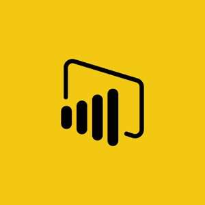
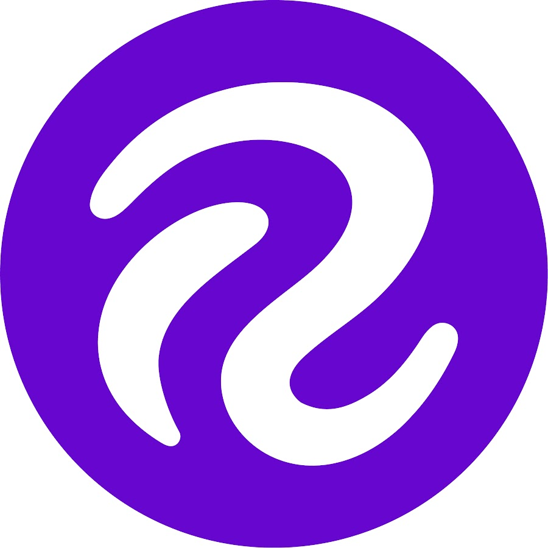

Mes compétences acquises lors du stage
Étudiant orienté Data & IA, j’aime utiler les données pour exploiter tous leurs potentiels. Niveau global : intermédiaire en Power BI & Python, avec une sensibilité produit (lisibilité, pertinence des KPI).
Compétences techniques

Power BI (Power Query & DAX)
Modèle en étoile, mesures KPI (taux de conversion, cycle moyen), pages de synthèse métier.

Roboflow et YOLO
Découverte de Roboflow et YOLO et apport d'aide
Git & GitHub
Versionnage des scripts, branches simples, README et suivi des évolutions.
Compétences techniques – preuves ciblées
- Power Query / DAX : normalisation d’Excel hétérogènes (typage, relations), mesures KPI et publication d’un dashboard fiable pour l’Avant-vente .
- YOLO / Roboflow : annotation & entraînement pour détection de symboles électriques sur plans (Voir le projet).
Compétences humaines
- Travail en équipe : échanges réguliers avec l’équipe IA et l’Avant-vente (recueil du besoin, itérations rapides).
- Résolution de problèmes : adaptation des données aux KPI attendus (règles de contrôle, mapping de colonnes).
- Autonomie : conduite d’un POC de bout en bout (collecte → modélisation → restitution).
- Communication : synthèse claire en réunion (objectifs, résultats, limites, prochaines étapes).
Outils & technologies utilisés
Python
Power BI
Roboflow
GitHub
Mes acquis professionnels
✅ Je suis capable de concevoir un outils de modélisation sur des données Excel réelles.
✅ Je suis capable de réaliser un projet de bout en bout avec des contrainte et critère particulié.
✅ Je suis capable de présenter des résultats d’analyse en réunion projet.
Impacts et résultats
- Accès plus simple et rapide aux données d'avant ventes, meilleurs compréhension pour les personnes extérieur
- Diminution des erreurs de lecture pour une meilleur interprétation et gain de temps.
- Aide au chiffrage : premier score de probabilité “Go / No Go” pour prioriser les offres.
Langues & liens
Français (natif) – Anglais (intermédiaire, technique).